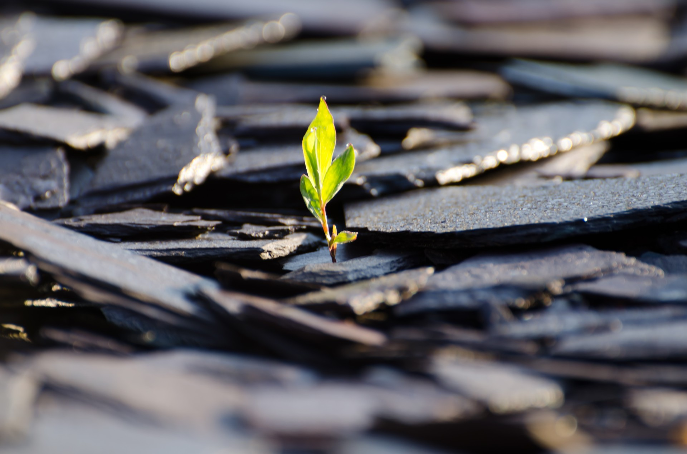

<!DOCTYPE html>
<html lang="en">
  <head>
    <meta charset="utf-8">
    <meta name="viewport" content="width=device-width, initial-scale=1.0">
    <meta name="description" content="">
    <meta name="author" content="">
    <link rel="shortcut icon" href="favicon.ico">

    <title>Welcome | Project Zero</title>

    <!-- Bootstrap core CSS -->
    <link href="css/bootstrap.css" rel="stylesheet">

    <!-- Custom styles for this template -->
    <link href="css/main.css" rel="stylesheet">
	<link rel="stylesheet" href="css/font-awesome.min.css">

    <script src="js/jquery.min.js"></script>
	<script src="js/modernizr.custom.js"></script>
    <link href='http://fonts.googleapis.com/css?family=Oswald:400,300,700' rel='stylesheet' type='text/css'>
    <link href='http://fonts.googleapis.com/css?family=EB+Garamond' rel='stylesheet' type='text/css'>
    <!-- HTML5 shim and Respond.js IE8 support of HTML5 elements and media queries -->
    <!--[if lt IE 9]>
      <script src="js/html5shiv.js"></script>
      <script src="js/respond.min.js"></script>
    <![endif]-->
  </head>
  <body data-spy="scroll" data-offset="0" data-target="#theMenu">

    <!-- Menu -->
  	<nav class="menu" id="theMenu">
  		<div class="menu-wrap">
  			<h1 class="logo"><a href="index.html#home">WELCOME</a></h1>
  			<i class="icon-remove menu-close"></i>
  			<a href="menu-web.html" class="smoothScroll">A Better Web</a>
  			<a href="menu-dev.html" class="smoothScroll">Web Development</a>
  			<a href="menu-git.html" class="smoothScroll">Git and GitHub</a>
  			<a href="menu-atom.html" class="smoothScroll">HTML and Atom</a>
  		</div>

  		<!-- Menu button -->
  		<div id="menuToggle"><i class="icon-reorder"></i></div>
  	</nav>

	<!-- ========== HEADER SECTION ========== -->
	<section id="home" name="home"></section>
	<div id="headerwrap">
		<div class="container">
			<div class="logo">
				
			</div>
			<br>
			<div class="row">
				<h1>PROJECT ZERO</h1>
				<br>
				<h3>Adrián Jiménez</h3>
				<br>
				<br>
				<div class="col-lg-6 col-lg-offset-3">
				</div>
			</div>
		</div><!-- /container -->
	</div><!-- /headerwrap -->


	<!-- ========== CONTENT SECTION ========== -->
	<section id="content" name="content"></section>
	<div id="f">
		<div class="container">
			<div class="row">
				<!-- INTRO INFORMATION-->
				<div class="col-lg-6" id="left_column">
            <!-- image goes here -->
          </br></br></br></br></br></br></br></br>
            
				</div><!-- left column -->
        <div class="col-lg-6">
          <p>A seedling is an incredible thing.  Out of a tiny hard shell,
            life slowly emerges, pushing aside any obstacles that it encounters.
              What begins as something barely noticeable and fragile gets stronger
               with the rays of the sun, the drops of the rainfall, and the nourishment
                of the earth.</p>
                <p>What does that have to do with anything, much less web technologies?
                   We all start out knowing absolutely nothing about how the technology
                   that surrounds us came to be or is used to create the websites we spend
                   so much time on.  Then, a tiny bit of interest in the matter makes us learn
                   a little bit more.  We sign up for a class, we look things up, we create a
                    page that says, "Hello World!"</p>
                <p>Throughout this class, we have explored topics ranging from web development
                  and hosting to the dark web and the future of the web.  We have learned about
                   many new technologies that did not exist a few years ago yet have so much impact
                   on the web today.  We learned to put together simple websites to prove our knowledge,
                    and we learned to not be afraid of trying new things.</p>
                <p>This page is a result of those efforts, and although simple,
                  it is an important milestone.  This is a live website that anyone
                  can see if they know where to look, like a small seedling among the immense
                   forest.  To explore this humble build, click on the menu to expand it.
                    If you are curious, <a href="imgs/map.jpg">here</a> is the sitemap of this website.  Thank you for visiting,
                    and may your journey continue showing you new things every day!</p>
        </div><!-- middle column -->
			</div>
		</div><!-- /container -->
	</div><!-- /f -->


  <!-- ========== CONTACT SECTION ========== -->
	<section id="contact" name="contact"></section>
	<div id="f">
		<div class="container">
			<div class="row">
				<div class="col-lg-6 col-lg-offset-3">
					<p>CIT 82<br/>Spring 2017<br/>Adrián Jiménez</p>
				</div>
			</div>
		</div>
	</div>


    <!-- Bootstrap core JavaScript
    ================================================== -->
    <!-- Placed at the end of the document so the pages load faster -->
	<script src="js/classie.js"></script>
    <script src="js/bootstrap.min.js"></script>
    <script src="js/smoothscroll.js"></script>
	<script src="js/main.js"></script>
</body>
</html>
